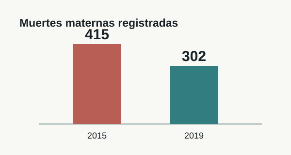
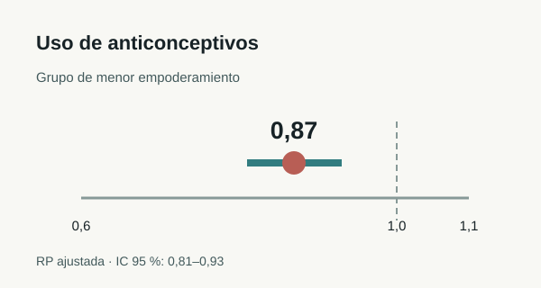
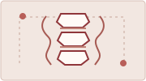
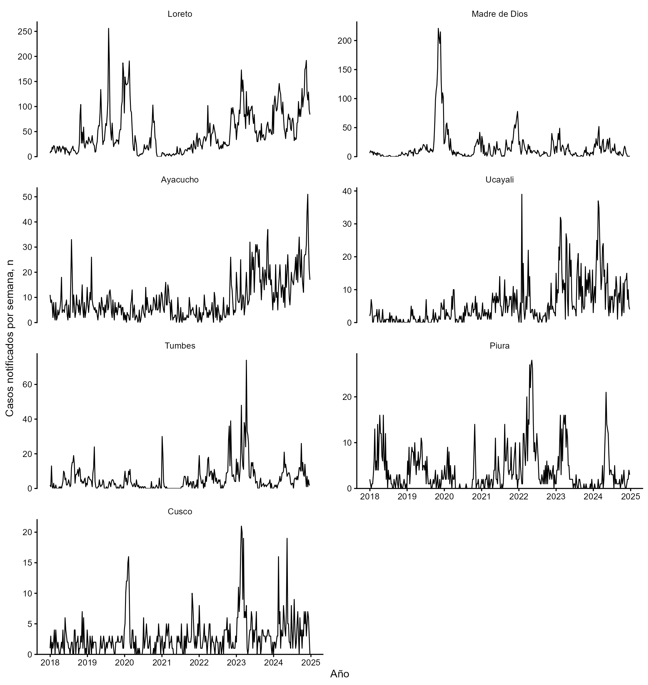
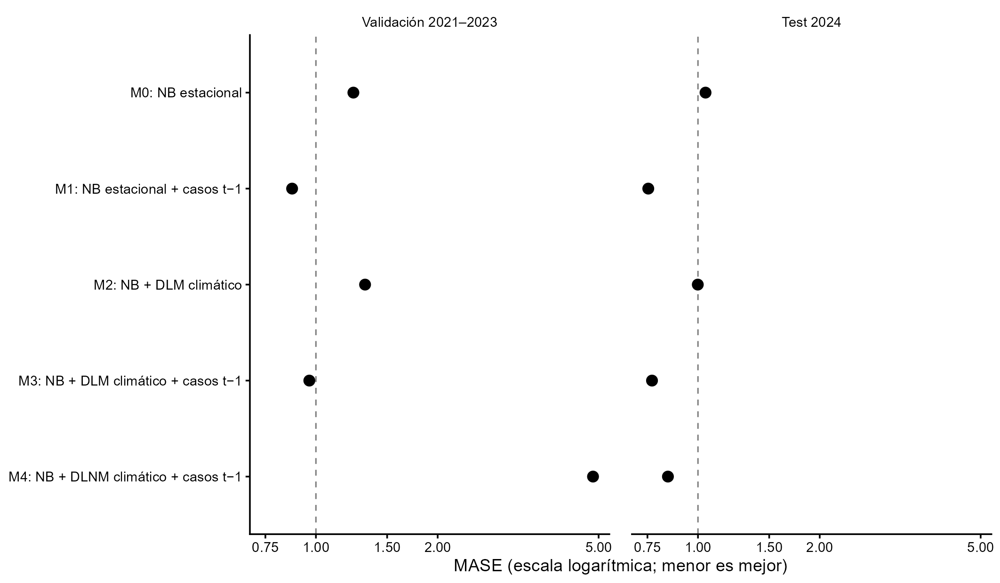
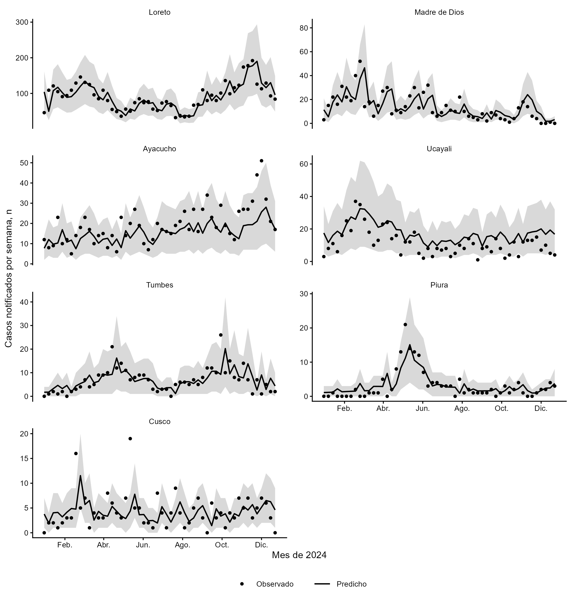

Epidemiología
Diseño de estudios, análisis de encuestas y registros de salud, vigilancia y evaluación de problemas poblacionales.
Médico · Investigador RENACYT nivel III · Lima, Perú
Epidemiología · Bioestadística · Investigación clínica
Perfil
Soy médico cirujano e investigador RENACYT nivel III. Coordino ensayos clínicos en el Instituto Nacional de Salud del Niño San Borja y enseño metodología e investigación en la Universidad Científica del Sur. Mis áreas principales son la epidemiología, la bioestadística y la investigación clínica.
Tengo formación de posgrado en Epidemiología Clínica y Bioestadística en la Universidad Científica del Sur. En 2025 cursé Principles and Practice of Clinical Research en Harvard T.H. Chan School of Public Health y actualmente sigo una diplomatura de Ciencia de Datos en la PUCP.
Trayectoria
Mi experiencia incluye investigación clínica, análisis de datos poblacionales, docencia universitaria, asesoría de tesis y publicación científica. Trabajo principalmente en salud materna y de la mujer, bioestadística, salud poblacional e investigación clínica.
Áreas de trabajo
Diseño de estudios, análisis de encuestas y registros de salud, vigilancia y evaluación de problemas poblacionales.
Protocolos, coordinación de ensayos, evaluación de factibilidad, procedimientos y ética de investigación.
Planes de análisis, preparación de datos, modelos estadísticos, interpretación y comunicación de resultados.
Búsqueda bibliográfica, lectura crítica, revisiones sistemáticas y de alcance, y evaluación GRADE.
Investigación publicada
Estos trabajos representan mis líneas de investigación en salud materna, salud de la mujer e investigación clínica. El CV académico incluye la lista completa de publicaciones.

En este estudio describimos la evolución y distribución regional de la mortalidad materna entre 2015 y 2019 a partir de registros nacionales. Los casos registrados disminuyeron de 415 a 302, aunque la distribución regional mostró diferencias que deben considerarse al interpretar la situación del país.
Leer publicación ↗
Analizamos datos de la ENDES para estudiar la relación entre el empoderamiento y el uso de métodos anticonceptivos en mujeres con antecedente de matrimonio o convivencia. Encontramos una menor prevalencia de uso en el grupo de menor empoderamiento (RP ajustada 0,87; IC 95 %: 0,81–0,93). El diseño permite describir una asociación, no establecer causalidad.
Leer publicación ↗
En esta revisión sistemática examinamos si los modelos anatómicos impresos en 3D ayudan a planificar la cirugía de deformidad espinal. Incluimos seis estudios comparativos con 344 pacientes. Los resultados sugieren posibles ventajas en tiempo quirúrgico y pérdida sanguínea, pero el riesgo de sesgo limita la certeza de esas estimaciones.
Leer publicación ↗Investigación en desarrollo · 2018–2024
Evaluamos la predicción semanal de leptospirosis en Perú con notificaciones, precipitación y temperatura. En los siete departamentos de mayor carga se concentró el 87,1 % de las notificaciones analizadas. En la prueba de 2024, el modelo que incorporó los casos de la semana previa obtuvo el menor error (MASE 0,754); agregar variables climáticas no mejoró ese resultado. El referente de persistencia obtuvo MASE 0,777.
Este resultado es pertinente ante la alerta de El Niño Costero comunicada por ENFEN el 30 de octubre de 2026. El estudio muestra qué variables funcionaron mejor en una evaluación retrospectiva; todavía no permite anticipar casos durante el evento de 2027 sin validación adicional.
Figuras originales del proyecto. Resultados de un manuscrito en revisión editorial; no se cuentan entre los artículos publicados.

Notificaciones por semana en siete departamentos de alta carga, 2018–2024.

Cinco modelos candidatos; MASE en validación temporal 2021–2023 y test 2024. Menor es mejor.

Casos semanales de 2024 y predicciones del modelo M1; la banda gris muestra el intervalo predictivo del 80 % cuando está disponible.
Cifras de la cohorte
Resultados del análisis de tiempo hasta la primera PCR positiva durante los 30 días posteriores al trasplante pediátrico.
Modelos de Cox univariables. Las líneas representan intervalos de confianza del 95 %; el punto, la estimación de HR.
Los tres intervalos incluyen HR = 1. No se identificaron asociaciones estadísticamente significativas; los resultados son exploratorios por el tamaño de la cohorte y los 19 eventos.
Artículo original ↗Investigación y colaboración
Trabajo desde la definición de la pregunta hasta la interpretación y comunicación de los resultados. Ajusto el diseño y los procedimientos a los datos disponibles y a la factibilidad del estudio. Cuando corresponde, sintetizo la evidencia existente antes de proponer un nuevo análisis.
Identifico estudios relevantes y documento estrategias de búsqueda reproducibles.
Reviso objetivos, población, variables, recursos y aspectos éticos.
Preparo las bases, elijo métodos acordes con la pregunta e interpreto sus límites.
Desarrollo revisiones sistemáticas o de alcance y evalúo la certeza cuando procede.
Elaboro tablas, resultados y discusión con lenguaje preciso y transparente.
Preparo el manuscrito y acompaño su revisión y respuesta editorial.
Docencia y asesoría
Asesoro a estudiantes de medicina y otras ciencias de la salud, en particular de la Universidad Científica del Sur, en proyectos y tesis relacionados con salud materna, salud de la mujer, salud poblacional, bioestadística e investigación clínica. En esa universidad enseño metodología, Tesis I y Tesis II.
vromanl@cientifica.edu.pe ↗Cuéntame tu pregunta, el estado de tu proyecto y el tipo de apoyo que necesitas.
Contacto profesional
Escríbeme con el tema, la población de estudio y la etapa del proyecto. Para colaboraciones académicas, describe brevemente la propuesta.